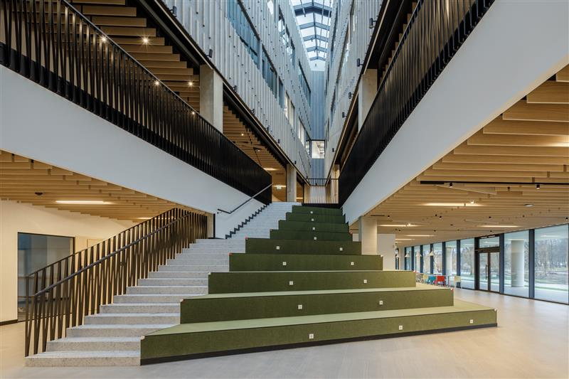

Delta hoone teine korrus on ideaalne koht õppimiseks ja rühmatöödeks! Teise korruse tudengiala on varustatud 12 väikese, kuid mugava "kärjega". Kärgedes on olemas lauad õppimiseks, pistikud kust laadida läpakaid, tahvlid, ning isegi kotttoolid! See on parim keskkond kellegagi koos õppimiseks.
Lisaks on ka olemas ka eraldi kohad just selleks, kui on vaja üksi õppida. Need väikesed booth'id on ideaalsed kohad kui sul on vaja keskenduda mingile kindlale ülesandele. Lisaks on kogu korrusel veel mitmeid mõnusaid kohti, kus niisama istuda või koos kooliasju arutada. Ja kui kellelgi peaks kõht tühjaks minema, siis esimesel korrusel on olemas Delta kohvik, kust mõistliku hinnaga midagi süüa saab!
Delta asub ka suhteliselt kesklinna lähedal nii, et sinna tulemine ei tohiks olla probleem!